Projects and Research
1. Early Warning System for flood
The project is being executed under the umbrella of Robotics Association Nepal for which I am the Research and Development Associate. The warning system that has been proposed is machine learning based. The hardware for the system will be installed in several of the stations throughout the Machheli river which is flows through Kailali district to Kanchanpur district where the village in danger is situated. The hardware consists of ultrasonic sensors, thermocouple sensors and LoRa module in combination with STM-32 microprocessor. The data is transmitted and is recieved by a similar hardware configuration at the village in danger (Tilki village). The hardware configuration for the recieving side also contains raspberry-pi for the purpose of processing and displaying the details of the data in the connected external display.
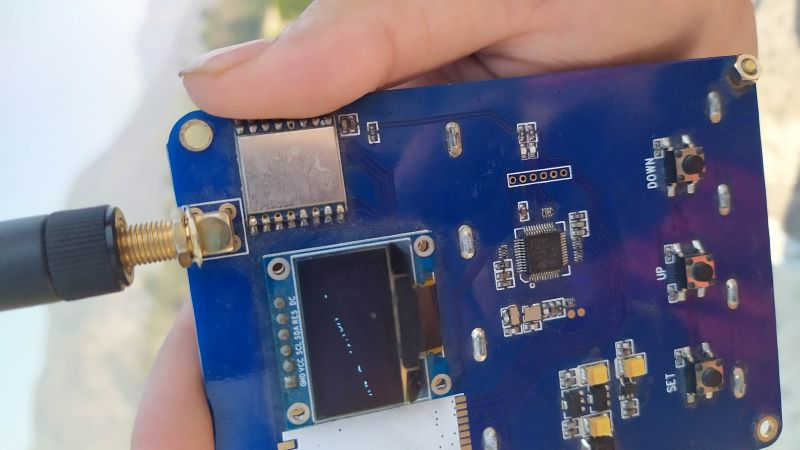
The ongoing work is to use the transmitted data and develop a machine learning model which will predict the height of the river one day ahead. For this the work is going on and preliminary model has already been designed. The realtime prediction from this model will also be published online.
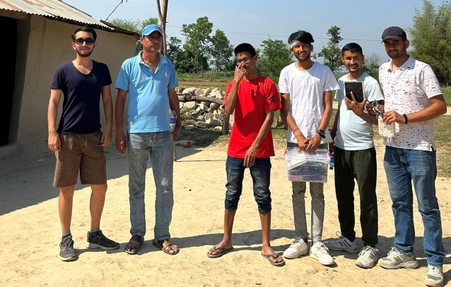
2. Drone Seed Bombing
The Project involved the customization of the Matrice 300 RTK drone to meet specific requirements. Initially, compressed air was utilized to test and enable the gun to shoot seeds. However, this approach proved to be ineffective and inefficient due to insufficient air pressure and leakage issues. Extensive research led us to explore the utilization of compressed CO2 bottles, commonly employed in paintball guns. Additionally, we investigated pneumatic cylinders as potential mechanisms for the guns. To cater to the additional requirements such as seed hoppers, hopper base holders, and seed loading mechanisms, we employed SolidWorks for 3D design and utilized high-quality printers like Resin 3D printers for the printing process. After assembling and thoroughly testing all the components, we achieved successful seed shooting from the drone at Mal Pokhari, Dhobighat.
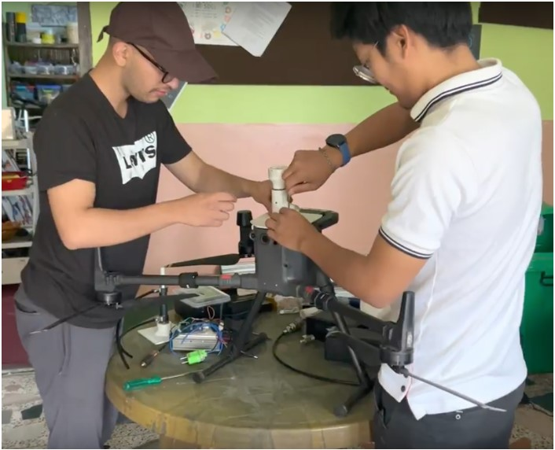
Having mechanical background my focus on this project was to design and fabricate mechanical components that allowed for the drone to house and execute shooting mechanism. I also took part in handling electronics to facilitate automatic control and flight.

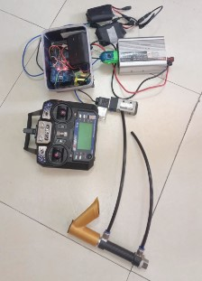
3) Novel Fuzzy Logic Controller
When it comes to control of robotic system PID control is the goto approach taken. Several studies have been done to use Fuzzy logic in developing a controller for this purpose. Me and my team studied and built this research by using motor acceleration as an additional variable in the FLCs. The inclusion of acceleration was already studied by another team of reserchers, but this research was for trajectory control of a planar manipulator and the study also did not incorporate disturbances. In our research we studied the inclusion of the motor acceleration in a 3 DOF robot manipulator free to move in all three axes. The robot manipulator design although did not have major effect in our research, we tried to model it in a way such that it resembled a pick and place robotic manipulator. In our study, we not only studied this inclusion in 3 DOF manipulator but also studied the trajectory tracking in the presense of disturbances. To simulate disturbances we added a gaussian sampled noise to mimic the sensor noises that arise in practical applications and also added an external impulse to mimic the external force that might occur in real life situations and how the controllers would behave in its presence. The solid model was designed in Solidworks. The solid model only served the purpose of the model and something to simulate the controllers on. The model has three degrees of freedom and the end effector trajecotory could be traced in three dimensions.
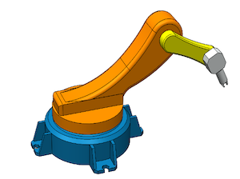
The first part of the research was to review a lot of literatures on fuzzy logic controllers and robotics and control. I had experience in robotics theory as I took Coursera classes in Robotics which was funded by Thapathali Campus. While learning Machine learning and Artificial Intelligence, the concept of fuzzy logic was not something new for me. This encouraged me to lead my research team. Our supervisor Mr Subodh Kumar Ghimire also had experience in fuzzy logic which further encouraged us to pursue research on this topic. The block representation of our system is as follows.
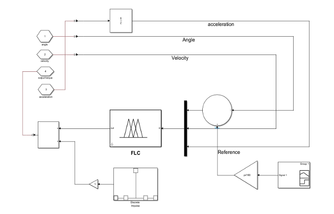
The fuzzy logic controllers were designed by making assumptions on the weight that would be applied on the end effector and also by studying the motor parameters that were available in market. The design was done on the basis previously achieved works. For example, The membership functions for all variables were initially chosen as triangular memberships to make the controller simple. Later these controller details were tweaked based on the responses. Likewise, the velocities and the angular displacement universes of the variables in fuzzy logic were selected on the basis of practicality of the variables. For example, a velocity of 1000 rad/s might be impractical so taking this velocity as motor velocity would be impractical.
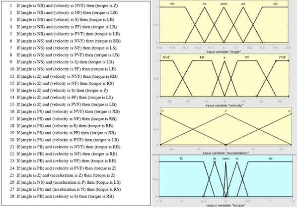
To study the effects of including the acceleration the same FLC without the acceleration variable was also designed. Likewise, to benchmark the FLCs PID controllers were also designed. One PID controller was designed by using Ziegler-Nichols method and further tuning of the controller was done manually. The second PID controller was tuned automatically by using the MATLAB's Autotuner applications. The sensor noise and external impulses were added separately and the simulations were also done seperately. The external impulses were added to the first joint whereas the sensor noise was added to the third joints. The simulations with these disturbances and wothout these disturbances were performed in the SIMSCAPE environment and the results were recorded.
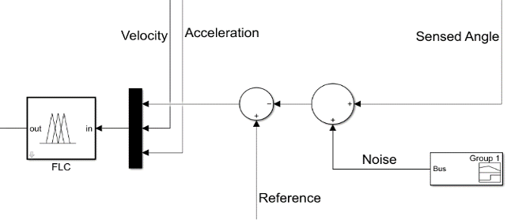
Cartesian Trajectory was used as input to the simulations. Four trajectories were used. The trajectories were first converted into joint trajectories by inverse kinematics. These joint trajectories acted as the reference for the joint controllers in order to effectively track the trajectories.
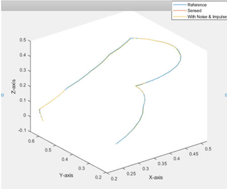
The results show that even in the presense of disturbances like external impact and sensor noise the trajectory tracking is better for FLC then with PID controllers. Among the PID controllers the AUTO tuned PID controllers showed better performances. The FLC without the acceleration showed better performance than the PID counterparts and the FLC with acceleration was the best controller in comparison. However, the difference in performance of the FLC with and without acceleration was very minimal from our experiment. This inclusion of acceleration however, was almost at no cost because this inclusion have negligible impact in the computational time. We wanted to build a physical model and the controllers but were suggested not to do so by our faculty because of the complexity and the financial constraints involved in fuzzy logic controllers. The MATLAB files and all the resources are available at my GITHUB
4. Binary Gender Classification Using Deep learning
In this project, I trained a deep learning model which tracked the face of any human in the frame and performed classification to classify the person as either male or a female. The model works on videos and is very accurate. The mode works when there are multiple faces in a single frame at single instance. The code once again is available at my GITHUB
3. Optimization for EV Charging Station for Kathmandu
This research is being done under supervision of Dr Khem Gyawali, Campus Chief of Thapathali Campus. This research is being done under the umberella of energy laboratory of Thapathali Campus. The research studies the electric bus choices and the optimization of the placements of charging stations inside Kathmandu valley. My responsibility in this research is more in programming and optimization using python. We are working on developing and solving the optimization problem in python. I am working on data analysis and visualization and in linear porgramming.
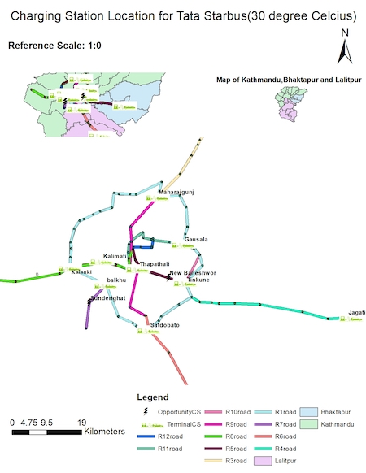
5. Machine Translation
Machine translation is the process of translation of a language using deep learning models. This project made use of transformers to process the language and the model was trained in google colab with the dataset already available under the apache license. This project has been done from end to end in Tensorflow examples. I did this project for German to English Translation.
6. Chatbot
This project is a minor project which was done to understand the working process of chatbots. The chatbot had a specific set of replies it could give and specific set of questions it could take. A more complex chatbot based on GANs was the ambition but the computational resources seemed extremely high. I do have intentions to work on this in the future.
5. Ancient Painting generation using GAN
In this project , I trained a deep learning model to generate paintings of ancient themes. The dataset available was once again available for free with apache license. This project helped me to learn and execute a GAN on my own. The model is not fine tuned and the results generated by this GAN is fascinating.
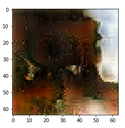